Terminator: Learning Optimal Exit Points for Early Stopping in Chain-of-Thought Reasoning
- We introduce hindsight-optimal reasoning length, a novel framework for determining where an LRM should stop thinking.
- Terminator is a lightweight single-layer probe that sits on top of any LRM. No fine-tuning of the base model is required.
- Best or second-best on 28 of 32 metrics across four models (Qwen3-8B/14B, Ministral-8B/14B) and four benchmarks (MATH-500, AIME 2025, HumanEval, GPQA).
- 2× faster wall-clock inference on average with only ~10% throughput overhead.
Abstract
Large Reasoning Models (LRMs) achieve impressive performance on complex reasoning tasks via Chain-of-Thought (CoT) reasoning, which enables them to generate intermediate thinking tokens before arriving at the final answer. However, LRMs often suffer from significant overthinking, spending excessive compute time even after the answer is generated early on. Prior work has identified the existence of an optimal reasoning length such that truncating reasoning at this point significantly shortens CoT outputs with virtually no change in performance. However, determining optimal CoT lengths for practical datasets is highly non-trivial as they are fully task and model-dependent. We precisely address this and design Terminator, an early-exit strategy for LRMs at inference to mitigate overthinking. The central idea underpinning Terminator is that the first arrival of an LRM's final answer is often predictable, and we leverage these first answer positions to create a novel dataset of optimal reasoning lengths to train Terminator. Powered by this approach, Terminator achieves significant reductions in CoT lengths of 14% – 55% on average across four challenging practical datasets: MATH-500, AIME 2025, HumanEval, and GPQA, whilst outperforming current state-of-the-art methods.
Motivation
Large Reasoning Models (LRMs) frequently overthink: even after generating the correct final answer early in their Chain-of-Thought, they continue to reason for hundreds or thousands of additional tokens, double-checking, exploring alternatives, and sometimes even changing to a wrong answer.
A natural question follows: can we detect when the LRM has already generated its final answer? We find that the answer is yes. By aligning many CoTs to the position where the final answer first appears and averaging, a clear confidence spike emerges at exactly that position. Individual CoT signals are noisy (Figure 2, left), but event-locked averaging across 3,200 CoTs from math, science, and coding problems reveals a consistent and sharp signal (Figure 2, right).
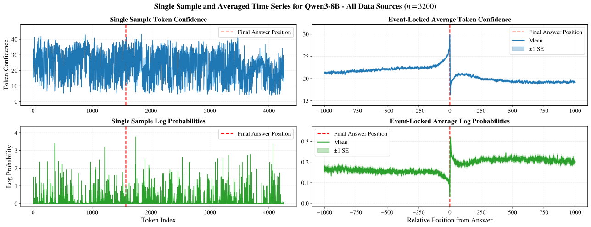
While this averaged signal clearly marks the answer position, using it directly during online inference is not straightforward: it requires multiple CoTs and knowledge of the answer position, which is the very thing we are trying to predict. This motivates a learned approach: training a probe on the LRM's hidden states to predict, token by token, whether the final answer has already been generated.
Event-Related Potentials for LRMs
We liken the averaged result in Figure 2 to the field of event-related potential (ERP) research. An ERP is a measurable brain response elicited by a sensory, cognitive, or motor event, captured by electroencephalogram (EEG) recordings (Luck, 2014). However, EEG recordings are often noisy, so ERPs are estimated using time-locked statistical estimators (e.g., averaging) across multiple EEG trials. While we do not claim that our findings will align exactly with ERP research, it is quite interesting that meaningful and observable signals can be extracted from LRMs using similar approaches, and we believe this warrants further exploration in future work.
↑ Back to sectionsKey Results
Performance Analysis
Figure 3 shows that Terminator defines the Pareto frontier on 14 of the 16 (LRM, benchmark) pairings, outperforming prior work. The plot covers four reasoning models (Qwen3-8B, Qwen3-14B, Ministral-3-8B-Reasoning-2512, Ministral-3-14B-Reasoning-2512) and four benchmarks (MATH-500, AIME 2025, HumanEval, GPQA). The full underlying numbers are reported in our paper.
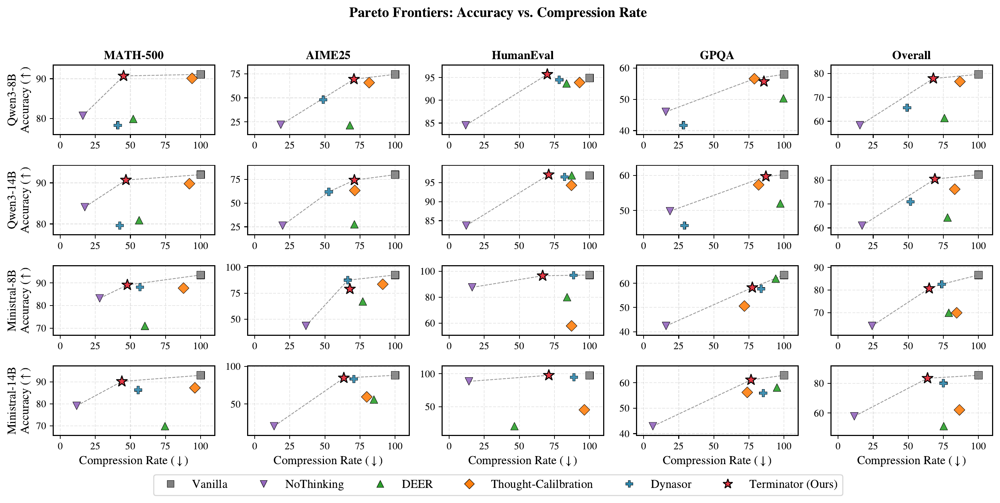
Latency Analysis
We benchmark Terminator's latency and throughput using a vLLM-compatible implementation on MATH-500 (batch size 1, single GH200). Terminator more than halves the average latency with only a small throughput overhead of 10.8% for Qwen3-8B and 7.5% for Qwen3-14B. Because Terminator's architecture (a single transformer layer and an FFN) remains fixed, the overhead shrinks proportionally as the base LRM grows.
| Method | Latency (s) | Throughput (tok/s) |
|---|---|---|
| Qwen3-8B | ||
| Vanilla | 32.68 ± 9.59 | 151.5 ± 4.4 |
| Terminator | 14.10 ± 6.27 | 135.2 ± 2.0 |
| Qwen3-14B | ||
| Vanilla | 43.38 ± 13.98 | 98.0 ± 2.0 |
| Terminator | 18.76 ± 6.52 | 90.6 ± 0.8 |
Hindsight-Optimal Reasoning Length
Since Terminator is trained on hindsight-optimal reasoning length CoTs, it is natural to ask where Terminator lies on the accuracy-compression frontier relative to the ground-truth hindsight-optimal reasoning length. Figure 4 traces test-set accuracy as CoTs are truncated at increasingly early points, forcing the LRM to commit to a final solution and answer. The diamond-shaped markers denote the position where the final answer first appears (i.e., the hindsight-optimal reasoning length). Accuracy stays essentially constant past this point, confirming that reasoning beyond the first answer yields no further gains. Although the hindsight-optimal reasoning length baseline is not achievable by any online method in principle, Terminator lands close to it across all four datasets.
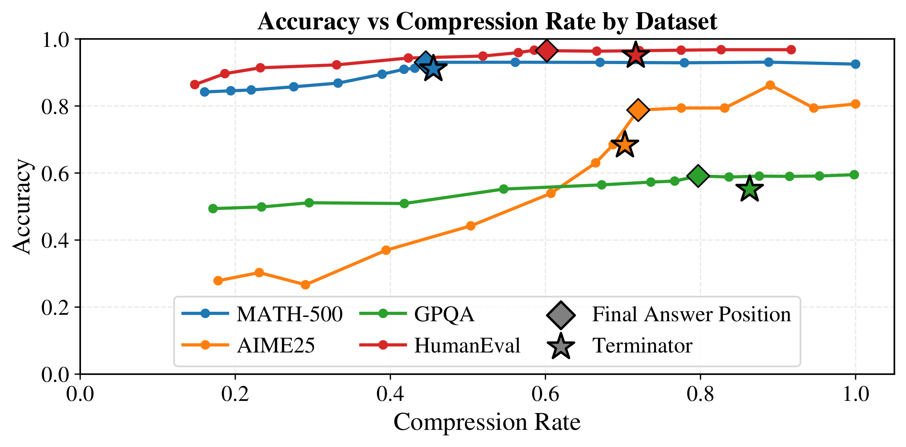
Method
Terminator is a single-layer transformer that sits on top of a base LRM and injects the end-of-thought token when the LRM has generated its final answer. Terminator accepts the final hidden-states of the LRM as input, and predicts a 0 if the answer has not been generated yet, or 1 if it has.
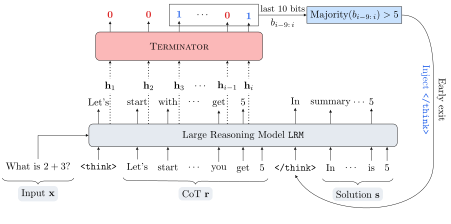
Training Details
Terminator is trained to predict the exact position of the first occurrence of the final answer of an LRM's CoT during online inference. An important challenge we overcome is to identify the exact position of the earliest final answer occurrence for a given CoT. Our training dataset is curated using the following pipeline for robust extraction of the answer position:
- Collect CoTs from the LRM
- For each CoT, we use a separate LRM to analyze the CoT for the final answer and extract its exact position
- Given the token position index of the answer, we construct the labels: set all positions before the answer to 0 and all positions after to 1
Finally, Terminator is trained with binary cross-entropy loss over each position in the CoT. By using the above training strategy, Terminator learns to exit when the LRM has generated the final answer it will eventually commit to.
Inference Details
At inference time, Terminator makes a prediction for each generated token by the LRM. Terminator forces the end-of-thought token to terminate reasoning early by using the following rules:
- Predict 1 if the predicted confidence is above a fixed threshold (set to 0.7 by default)
- Count the number of predicted 1s in a sliding window of the most recent predictions (the window size is 10 by default)
- If the majority (>5 if the window size is 10) of predictions are 1, then the CoT is terminated
Additional Results
Below are some additional results that we wish to highlight.
Thinking Token Frequency Shift
"Thinking tokens" such as wait, hmm, okay, and alternatively are associated with ongoing reasoning. We find that they exhibit measurable frequency shifts once the final answer is generated. The plots below show token rates before vs. after the answer for three such tokens. For example, hmm and okay occur more frequently before the answer, while another occurs more frequently after. Dot size reflects relative CoT length. Similar plots with different "thinking tokens" are shown in the appendix of our paper.
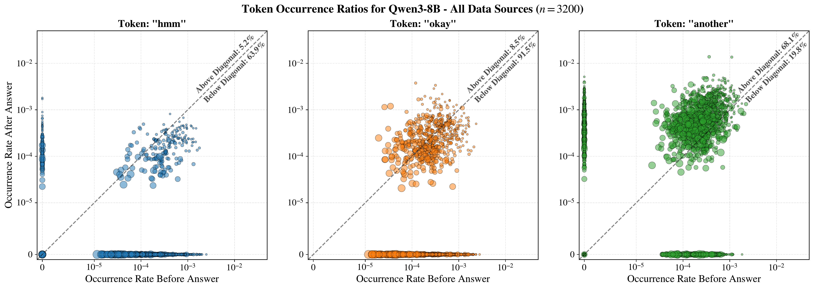
Terminator Recovers Early-Exit Signals
Our motivation (Figure 2) showed that the first arrival of the final answer is marked by a confidence spike under event-locked averaging, and by a shift in "thinking token" usage. A natural question is whether Terminator, trained only on the LRM's hidden states, recovers these same signals using its own predicted exit positions, rather than the ground-truth answer positions.
Figure 7 mirrors the event-locked averaging of Figure 2, but uses all test samples rather than 3,200 randomly selected training samples. Its left and center panels show the averaged Token-Confidence using ground-truth and Terminator-predicted answer positions, respectively. The two are nearly identical, and the right panel shows that the prediction errors are tightly concentrated near zero, with a median difference of 7 tokens.
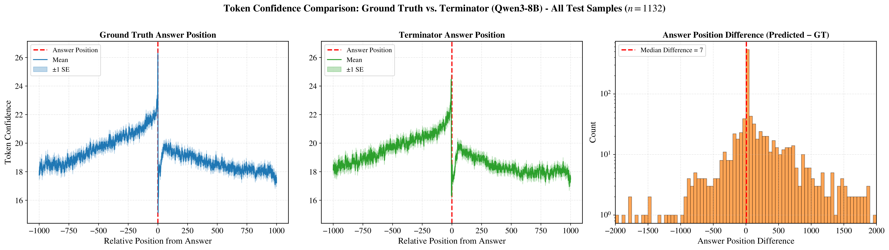
Figure 8 parallels the "thinking token" analysis by overlaying scatter plots computed from ground-truth and predicted answer positions. The inset axes show nearly identical above-diagonal percentages, indicating that Terminator preserves the same before/after token usage biases. Together, these results show that training Terminator on the LRM's hidden states alone is sufficient to independently recover the early-exit signals that motivate our approach.
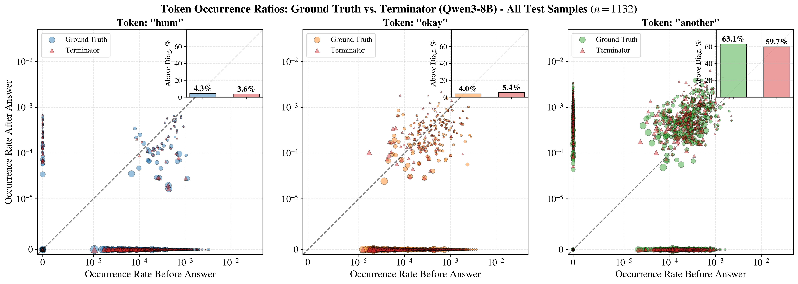
Out-of-Distribution Generalization
Our main results train Terminator on a mix of all four training tasks. To assess out-of-distribution (OOD) generalization, we instead train a separate probe on each individual task and evaluate it on every test set. Figure 9 reports compression rate (left) and accuracy (right), with rows denoting the training dataset and columns the test dataset.
Compression is best in-distribution (along the diagonal), but accuracy does not always follow the same pattern. For example, training on OpenScience yields the lowest GPQA accuracy despite GPQA being in-distribution, whereas training on the OOD OpenCoder-SFT data improves GPQA accuracy but worsens its compression to 96%. In short, OOD evaluation can slightly improve accuracy but often delays exiting, reducing token savings on data not seen during training.
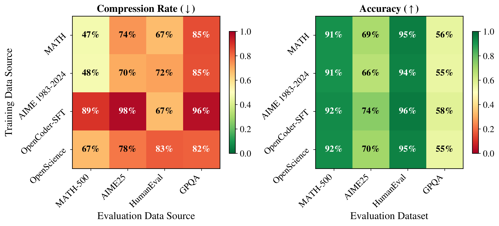
Example 1: MATH-500
For easier problems like those in MATH-500, Terminator shows sharp transitions in predicted confidence at the exiting threshold, with good separation between the "still reasoning" and "answer generated" regimes. By manual inspection, we observe that there is a clearer transition to overthinking on these problems, which Terminator detects well.
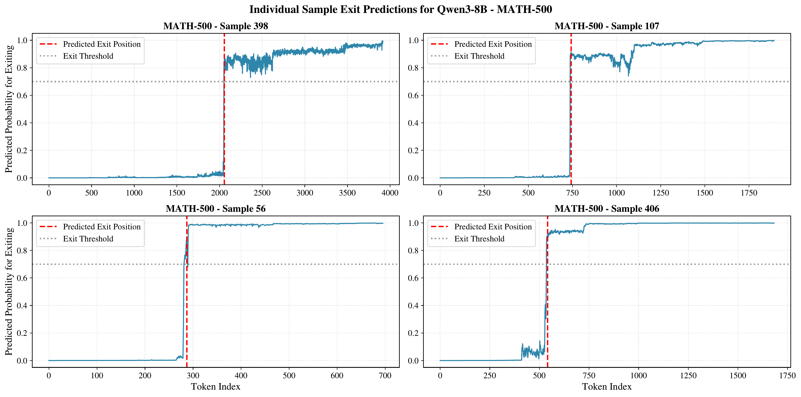
Figure 11 zooms in on a single MATH-500 sample, showing the full CoT with Terminator's predicted probabilities overlaid. The predicted probability remains low throughout the reasoning phase and rises sharply once the final answer has been generated, triggering the early exit.
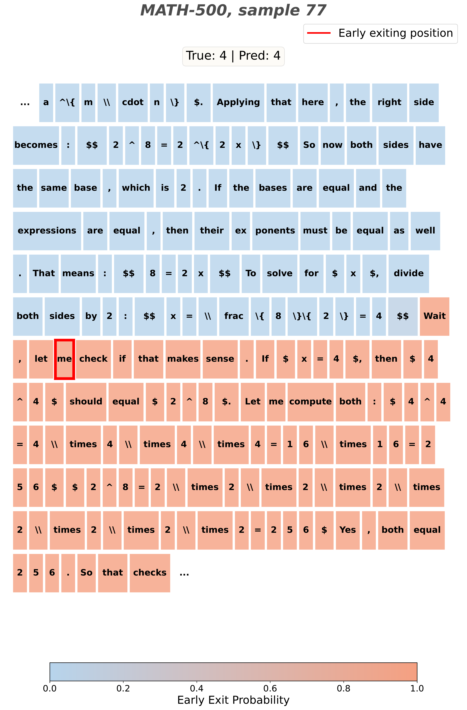
Example 2: AIME 2025
For harder problems like those in AIME 2025, the transition from productive reasoning to overthinking is less obvious, and Terminator's predicted probabilities do not show the same sharp transition seen on MATH-500. This is consistent with the observation that identifying a good exit position is more challenging on very hard tasks.
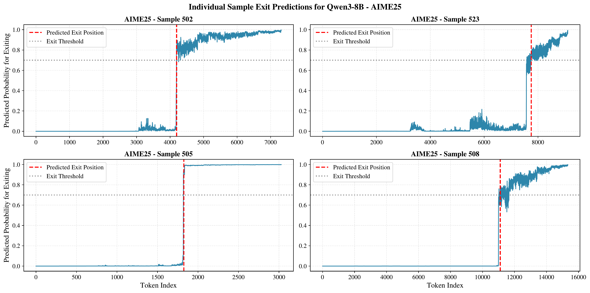
Figure 13 shows a case where Terminator struggles to find a clean exit position. The predicted probabilities oscillate near the threshold rather than making a decisive jump, reflecting the difficulty of the underlying problem. Despite this, Terminator still achieves strong performance on AIME 2025 overall.
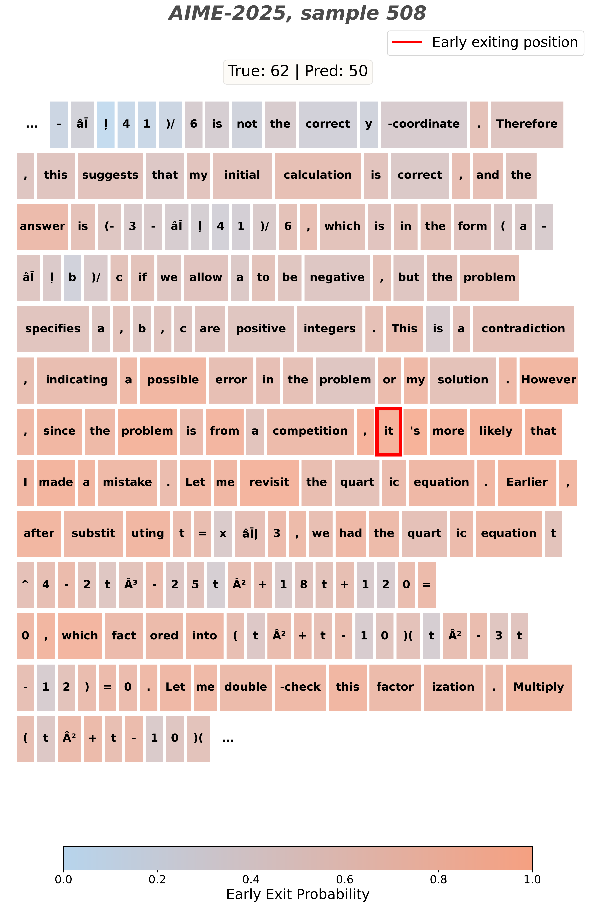
Demo 🚀
Try Terminator yourself! We provide ready-to-run model packages on HuggingFace with a high-performance vLLM server and a standalone inference script.
Available Models
| Model | Base Model | Min. VRAM |
|---|---|---|
| Terminator-Qwen3-8B | Qwen3-8B | ~24 GB |
| Terminator-Qwen3-14B | Qwen3-14B | ~40 GB |
Quick Start
# Clone a model repo (requires Git LFS: https://git-lfs.com)
git lfs install
git clone https://huggingface.co/acnagle/Terminator-Qwen3-8B
cd Terminator-Qwen3-8B
# Automated setup (creates conda env, installs vLLM, downloads base model)
./setup.sh
# Start the vLLM server
./start_server.sh
# In another terminal, chat with the model
python client.py --interactiveStandalone Inference (No Server)
For quick testing without spinning up a vLLM server, use the HuggingFace-native inference script included in each model repo:
python inference_hf.py --prompt "What is the sum of the first 100 natural numbers?"Thinking content is streamed in dimmed text; the final answer is shown in bold. For best performance, the vLLM server is recommended.
Using the API Directly
The vLLM server exposes an OpenAI-compatible API, so you can use any OpenAI client library:
from openai import OpenAI
client = OpenAI(base_url="http://localhost:8000/v1", api_key="EMPTY")
response = client.chat.completions.create(
model="Terminator-Qwen3-8B",
messages=[{"role": "user", "content": "What is 25 * 37?"}],
temperature=0.6,
extra_body={"chat_template_kwargs": {"enable_thinking": True}},
)
# Thinking content (chain-of-thought)
print(response.choices[0].message.reasoning)
# Final answer
print(response.choices[0].message.content)Citation
@misc{nagle2026terminatorlearningoptimalexit,
title = {TERMINATOR: Learning Optimal Exit Points for Early Stopping in Chain-of-Thought Reasoning},
author = {Alliot Nagle and Jakhongir Saydaliev and Dhia Garbaya and Michael Gastpar and Ashok Vardhan Makkuva and Hyeji Kim},
year = {2026},
eprint = {2603.12529},
archivePrefix = {arXiv},
primaryClass = {cs.LG},
url = {https://arxiv.org/abs/2603.12529}
}
↑ Back to sections